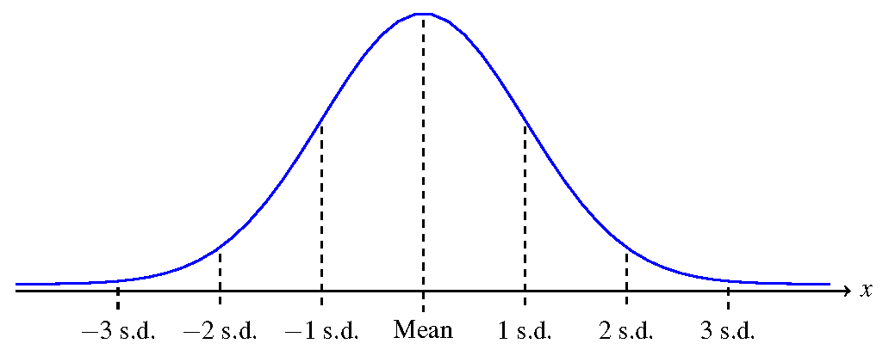
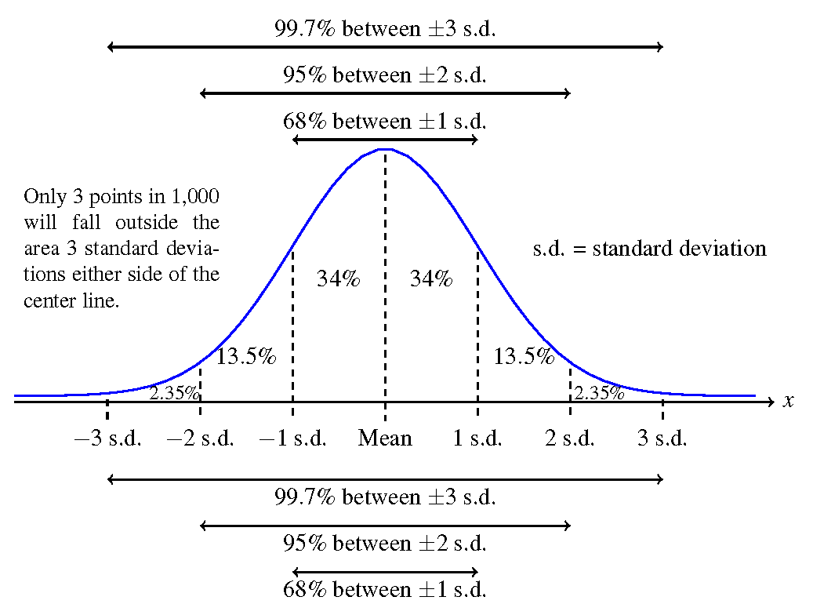

The most common type of continuous random variable is called a normal distribution.
Normal distributions appear commonly in practice.
Normal distributions are unimodal (mound shape) and symmetric.
All normal distributions look the same if we measure the $x$-axis using standard deviations. 
We view the probability as the area of a certain region under the normal curve. 
We use the letter $z$ to stand for the number of standard deviations $x$ (the actual data value) is from the mean.
$z = 1$ means one standard deviation above the mean
$z = -3$ means three standard deviations below the mean
$x$ and $z$ are related by the formulas \[ z = \frac{x - \mu}{\sigma}\] \[ x = \mu + z \times \sigma \]
Assume a continuous random variable $x$ has a normal distribution with mean $50$ and standard deviation $6$.
$x = 41$ has $z$ value \[ z = \frac{41 - 50}{6} = -1.5\]
$x = 74$ has $z$ value \[ z = \frac{74 - 50}{6} = 4\]
$z = 2.25$ corresponds to \[x = 50 + 2.25*6 = 63.5 \]
When a random variable is normally distributed, compute probabilities by first converting to the standard normal distribution with mean 0 and standard deviation 1.
This mean convert $x$ values to $z$ values and find probabilities from the $z$ values.
We can already compute probabilities for integer $z$ values
To find probabilities for non-integer $z$ values use a $Z$ Table.
A $Z$ Table gives the cummulative probability from the left up to a specified $z$ value.
$z$ values are given with two decimal places.
$z$ values start at $z = -3.00$ and go up to $z = 3.00$
Find $P(z < -2.23) = 0.0129$
Find $P(z > -2.23) = 1 - 0.0129 = 0.9871$
Assume a continuous random variable $x$ has a normal distribution with mean $50$ and standard deviation $6$.
Find $P(x < 41)$.
First $x = 41$ has $z$ value $z = -1.5$
Second, $P(z < -1.5) = 0.0668$
$P(x < 41) = P(z < -1.5) = 0.0668$
Find $P(z < 0.75) = 0.7734$
Find $P(0 < z < 0.75) = 0.7734 - 0.5 = 0.2734$
\[ P(0 < z < 0.75) = P(z< 0.75) - P(z < 0) = 0.7734 - 0.5 = 0.2734\]Assume a continuous random variable $x$ has a normal distribution with mean $50$ and standard deviation $6$.
Find $P(x > 74)$.
First $x = 74$ has $z$ value $z = 4$
Second, $P(z > 4) \approx 0$
$P(x > 74) = P(z > 4) \approx 0$
Find each of the probabilities using a $Z$ table.
Textbook section 6.1: The Standard Normal Distribution
Textbook section 6.2: Using the Normal Distribution